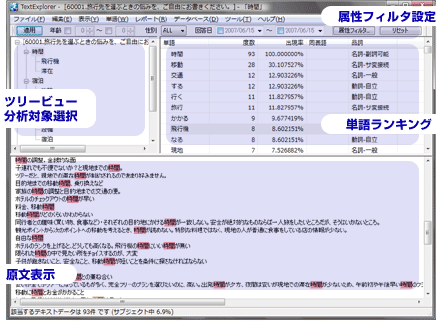

2007年10月30日
チームラボ株式会社
株式会社ネットマイル
ネットマイルとチームラボ、
テキストマイニングソフト『TextExplorer』の無料提供を開始！
インターネット上の共通ポイントプログラムを運営する株式会社ネットマイル（本社：東京都千代田区、代表取締役社長：山本雅 以下、ネットマイル社）とチームラボ株式会社（本社：東京都文京区、代表取締役社長：猪子寿之 以下、チームラボ社）は、2007年10月30日より、ネットマイルが提供するインターネット調査サービス「NetMileリサーチ」（URL：http://research.netmile.co.jp/）上でこれまで有料で提供していたテキストマイニングのソフトウェア『TextExplorer（テキストエクスプローラー）』を無料で提供いたします。
アンケートの回答結果における「自由記入コメント」には、ユーザーの貴重な意見や、今後の方向性を導き出す重要なキーワードがあふれています。
これまで、この「自由記入コメント」を分析するには、高額なソフトやアプリケーションを利用するか、すべての回答を時間をかけて読み込む必要性がありました。
このたびネットマイル社では、NetMileリサーチの利用登録をされたすべてのお客様に対し、チームラボ社が独自に開発した高性能テキストマイニングソフト『TextExplorer』を無料でご提供いたします。
1. 『TextExplorer』の特徴
- 膨大で複雑な文章も、すばやく分析し、結果を表示。 → コスト・時間を短縮。
- 有用な情報、キーワード、意外な関連性などを鮮やかに抽出。
- 分析対象のデータのポジティブ意見・ネガティブ意見の割合をグラフィカルに表示。
- 属性・選択肢データなど、他の定量データと自由な組み合わせのクロス集計が可能。
- 見やすい画面で、簡単に操作が可能。担当者様ご自身で、掘り下げた分析も自在に。
- NetMileリサーチ以外で行ったアンケート結果も分析可能。
『TextExplorer』は、NetMileリサーチの利用者に対し、コストや時間を気にせず、調査結果をより有益なものへと導く“お助け”ツールです。
2. 『TextExplorer』の機能
| 1. 単語ランキング |
単語の出現回数をカウントします。
出現率の表示させることで、単語⇔単語間の相関関係も把握可能です。 |
| 2. 共起分析 |
共起（同時出現）する単語を分析します。
話題となっている言葉などの把握が可能です。 |
| 3. ポジティブ・ネガティブ分析 |
分析対象のデータが、ポジティブな意見が多いか、ネガティブな意見が多いかをグラフィカルに表示します。 |
| 4. 属性クロス分析 |
分析対象データと、モニタ属性のクロス集計が簡単に行えます。 |
| 5. 定量データクロス分析 |
分析対象データと、定量データのクロス集計が簡単に行えます。 |
| 6. その他 |
| ・ |
“ツリービュー”（下図参照）によるわかりやすい階層表示により、対話的なドリルダウン分析が可能。 |
| ・ |
マルチな閲覧ウィンドーにより、常に原文を参照可能。 |
| ・ |
キーワードはハイライト（色付き）で表示。 |
| ・ |
分析結果をPowerPoint/Excelファイルとして出力が可能。 |
|
|
3．『TextExplorer』画面イメージ

【株式会社ネットマイルについて】
2000年11月設立。インターネットポイント・サービスの先駆けとして、共通ポイントプログラム「ネットマイル」を2001年4月にサービス開始。加盟サイト数953社、会員口座数367万口座（2007年9月末現在）の規模は、日本最大級。三井物産株式会社の連結子会社で、同社のIT事業戦略の一端を担う。
代表取締役社長 山本雅は、本年設立された日本インターネットポイント協議会(JIPC)の会長を務める。
| 社名 |
株式会社ネットマイル |
| 代表取締役 |
山本 雅 |
| 所在地 |
〒101-0054 東京都千代田区神田錦町3-26 一ツ橋 SIビル 9F |
| 資本金 |
396百万円 |
| 設立 |
2000年11月7日 |
| 事業内容 |
1：インターネット市場におけるユニバーサルポイントプログラム「ネットマイル」のサービスを運営
2：ネットマイル会員を活用した、大規模ネットリサーチの運営 |
| 出資企業 |
三井物産株式会社 / トランス・コスモス株式会社 / 三菱UFJニコス株式会社 / みずほキャピタル株式会社 |
|
【チームラボ株式会社について】
http://www.team-lab.com/
2001年活動開始。ウルトラテクノロジスト集団。
主観的・身体的認識の共通性を探求・再現するテクノロジーの研究がコンセプト。
独自のテクノロジーを使ったWeb構築や、主観的・身体的認識を再構築したアート、行為の中から新たな価値を生むデザインを中心に活動。ニュースポータルiza(イザ！)（Web of the year 2006 新人賞、Web人 of the year 2006)、オモロ検索エンジンsagool（sagool.jp）、不動産物件検索ポータル いえーい！(ie-ei.jp)などのWebの企画開発や、検索エンジンやレコメンデーションエンジンなどの開発販売を行う他、アート活動として、水墨空間「花紅（ハナハクレナイ）」などで、海外などの展覧会に多数参加。au Design projectnにて、2007年のコンセプトモデルとして、新しいインターフェイスの概念の携帯電話actfaceを発表。
| 社名 |
チームラボ株式会社 |
| 代表取締役 |
猪子 寿之 |
| 所在地 |
〒113-0033 東京都文京区本郷4-9-22 本郷フジビル2F |
| 資本金 |
1000万円 |
| 設立 |
2001年3月 |
| 事業内容 |
1：先端インターネットテクノロジーの開発・販売
2：WEB2.0トータルソリューションの提供
3：インターネットサービスの提供
4：マーケティングテクノロジーサービスの提供
5：アート・デザイン・クリエイティブ制作 |
|
＜当リリースに関する報道関係者お問い合わせ先＞
株式会社ネットマイル 広報担当：江澤・村井
Email ： 
TEL ：  |